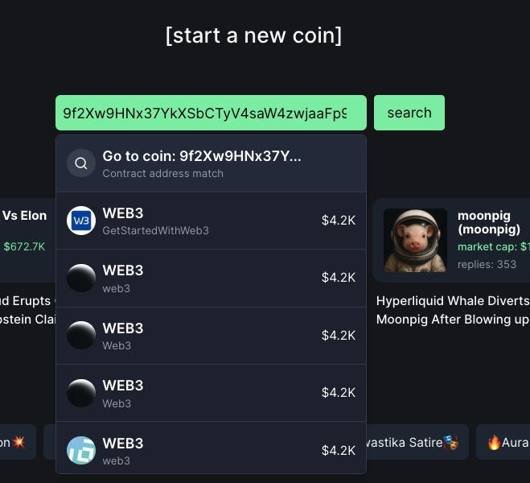
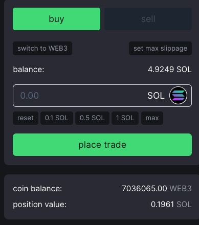

如何在 Pump.fun 上发行你的第一个 meme币
💡 本教程将指导您如何在 Solana 链上通过 Pump.fun 平台快速发行自己的第一个meme币，无需编写任何代码。整个过程只需几分钟即可完成，是 Web3 新手入门的绝佳实践。
目录
背景介绍
什么是 Pump.fun？
🚀 Pump.fun 是基于 Solana 链的一个一站式发币和交易平台，让任何人都能以极低的成本和门槛发行自己的代币。这些代币通常被称为"模因币"(meme coins)或"社区币"，可以反映特定主题、事件或社区。
Pump.fun 平台的独特之处在于：
| 特点 | 描述 |
|---|---|
| 极低成本 | 仅需 0.02 SOL 即可完成代币发行 |
| 用户友好 | 无需编程知识，点击几下即可完成 |
| 自动流动性 | 自动在 Raydium 上创建交易对 |
| 实时交易 | 发行后立即可交易，无需等待 |
| 社区互动 | 内置评论和社交功能 |
为什么选择在 Solana 上发meme？
⚡ Solana 区块链具有以下优势：
- 超高交易速度（每秒处理数千笔交易）
- 极低的交易费用（通常低于 0.01 美元）
- 活跃的生态系统和大量用户基础
- 对小型代币项目友好的环境
准备工作
必备条件
在开始前，请确保您已准备好以下内容：
Solana 钱包：推荐使用 Phantom 钱包
🔔 Phantom是最流行的Solana钱包之一，提供了友好的用户界面和安全特性
SOL：至少 0.03 SOL（用于支付发行费用和首次购买）
- 代币创意：包括名称、符号、描述和图像
创建 Phantom 钱包（如果您还没有）
- 访问 Phantom 官网 并下载浏览器插件
- 按照提示创建一个新钱包
- 确保安全备份您的助记词
- 向钱包中充值一些 SOL（可从交易所转入）
⚠️ 重要：助记词是恢复钱包的唯一方式，请将它安全地存储在纸质介质上，并保存在安全的地方。永远不要将助记词分享给他人或存储在电子设备上。
创建代币步骤
步骤 1：访问 Pump.fun 平台
打开浏览器，访问 Pump.fun

点击右上角的“Connect”按钮连接您的 Phantom 钱包
在弹出的钱包界面中确认连接
🔔 连接钱包时，请确保您在官方的 Pump.fun 网站上，以避免钱包汉钥被盗取的风险
步骤 2：开始创建新代币
在平台首页点击"Start a new coin"按钮

进入代币创建页面
步骤 3：填写代币信息
填写以下代币基本信息：
| 字段 | 说明 | 示例 |
|---|---|---|
| 名称 | 代币全称 | GetStartedWithWeb3 |
| 符号 | 代币简称(大写) | WEB3 |
| 图片 | 代币图标 | 上传一个正方形图像 |
| 描述 | 代币简介 | GetStartedWithWeb3社区meme |
| 网站/社交媒体 | 可选链接 | Twitter、Discord等这里我们把我们的仓库放上去https://github.com/beihaili |

🔔 注：填写代币名称、符号和描述，这些是您代币的基本信息。
⚠️ 注意：请选择一个独特且有吸引力的名称和符号，这对代币的后续推广非常重要。
步骤 4：确认创建
- 填写完所有信息后，点击"Create coin"按钮
- 在弹出的确认框中，您可以选择是否在创建时购买一定数量的代币：
- 建议购买一些初始meme币（例如 0.2 SOL），这样您将持有自己发行meme币的一部分
- 确认交易详情，包括：
- 发行费用（约 0.02 SOL）
- 初始购买金额（如有）
- 总费用
- 点击“确认”按钮并在钱包中批准交易
步骤 5：发行成功
交易确认后，您的代币将在几秒钟内发行完成。系统会显示成功信息，并提供查看代币详情的链接。
点击"View"按钮查看您的代币详情页面。

我们的WEB3代币合约地址9f2Xw9HNx37YkXSbCTyV4saW4zwjaaFp9tFHPjtYpump，这个地址是唯一识别，可以通过这个地址在pumpfun购买meme币
管理和推广您的代币
查看代币详情
在代币详情页面，您可以看到以下信息：
- 代币价格走势图
- 当前市值
- 持有者数量
- 交易活动
- 社区评论
- 合约地址
如何购买代币
- 打开pumpfun
- 在搜索框中输入您的代币合约地址 例如我们的代币合约地址：9f2Xw9HNx37YkXSbCTyV4saW4zwjaaFp9tFHPjtYpump
选择数量点击购买
确认交易详情，包括：
- 花费的 SOL 代币数量
- 将收获的 WEB3 代币数量
- 点击"确认"按钮并在钱包中批准交易
增加流动性
要使您的代币更具流动性，您可以：
- 购买更多的代币来增加价格
- 分享代币链接，鼓励他人购买
- 考虑使用 Pump.fun 的高级工具
社区互动
积极参与代币页面的讨论：
- 发表评论介绍您的代币愿景
- 回复其他用户的问题
- 定期更新代币发展进展
常见问题解答
❓ 发行代币需要多少 SOL？
最低需要 0.03 SOL，其中包括 0.02 SOL 的发行费用和 0.01 SOL 的交易费用。建议准备 0.1 SOL 以上，这样可以在发行后购买一些自己的代币。
❓ 代币发行后可以修改信息吗？
代币基本信息（如名称和符号）发行后无法修改，但您可以更新社交媒体链接和参与社区讨论。
❓ 如何提高代币的价值？
- 创建实用的用例和路线图
- 建立活跃的社区
- 进行定期更新和营销
- 寻找合作伙伴和集成机会
❓ 代币流动性如何管理？
Pump.fun 使用自动债券曲线来管理流动性，随着购买量增加，代币价格会上升；随着卖出量增加，价格会下降。无需手动提供流动性。
❓ 创建代币后为什么在区块链浏览器上找不到？
发行完成后，你的代币需要几分钟时间在Solana区块浏览器（如Solscan或Solana Explorer）上更新索引。你可以先使用Pump.fun的界面查看代币信息，等待区块链浏览器更新完成。
❓ 我需要维护我的代币吗？会有定期费用吗？
Pump.fun上发行的代币不需要你定期维护或支付维护费用。一旦发行，代币将永久存在于Solana区块链上。唯一的费用是初始发行费用和交易时的小额网络费。
结语
通过本教程，你已经完成了一次真正的 Web3 创造——在全球可访问的区块链上发行了自己的数字资产。当你看到自己的代币名字和代码出现在区块链浏览器上时，相信你一定感受到了这个全新金融世界的魅力。
别小看这看似简单的操作，它代表着一种历史性的变革：
- 金融民主化：曾经，只有金融机构和政府才能发行货币或证券。你刚刚说明，现在任何人都可以这样做。
- 全球化：你的代币可以被世界各地的人交易，没有国境限制。
- 无许可创新：你不需要任何政府机构的批准就能创造新的金融工具。
从这里出发，你可以：
- 深入学习代币经济学，了解依靠更复杂的逻辑来设计有价值的代币
- 基于你的代币建立真正的社区，激发集体创造力
- 学习更复杂的智能合约开发，为你的代币添加实用功能
- 探索去中心化金融模式，考虑更多应用场景
Web3 的旅程才刚刚开始。从一个简单的代币到可能改变世界的项目，这条路上充满了无限的可能性。你的创造力、执行力和社区的力量，将决定你能走多远。
记住，每一个改变世界的项目，都是从一步简单的尝试开始的——你已经迈出了这一步。